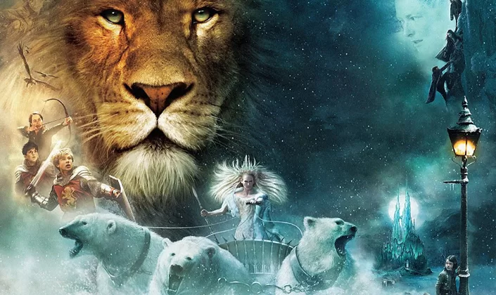
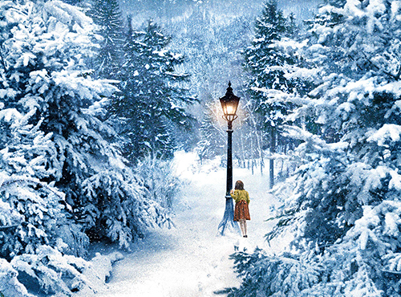
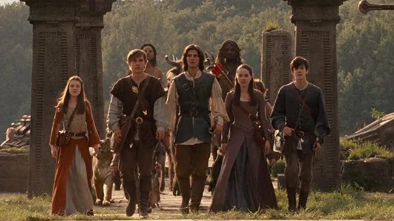

Durante os bombardeios da Segunda Guerra Mundial de Londres, quatro irmãos ingleses são enviados para uma casa de campo onde eles estarão seguros.
um dia enquanto lucy brincava pela casa ela encontrou um guarda-roupa e entrou nele para se esconder dos irmãos mas ela não sabia que ele era mágico e era um portal para narnia.
após entrar nesse mundo magico e ficar encantada com a beleza do lugar ela volta e conta a seus irmãos, porém eles não acreditam nela acham que ela está inventando algo para suprir a falta de sua mãe
até edmundo acabar entrando no guarda-roupa e encontrar a feiticeira, quando ele volta e conta a seus irmãos que lucy estava falando a verdade todos voltam para narnia onde conhecem aslan, um leão mágico considerado o rei de narnia junto das crianças que foram coroadas por ele
assim eles se juntam ao leão e a diversas criaturas mágicas em um exercito para derrotar a feiticeira
   Trailer